DECEMBER 2025
Oreva
Dord Fitz Gallery
Solo BFA exhibition
Joseph Oreva’s solo BFA exhibition, presented at Dord Fitz Gallery in December 2025.
Exhibition photographs are presented below; individual artwork details will be added here.
 JOSEPH OREVA
ARTIST / ATHLETE
JOSEPH OREVA
ARTIST / ATHLETE
Joseph Oreva is a Nigerian visual artist specializing in painting.
His practice explores overlooked moments in sports through realism and abstraction.
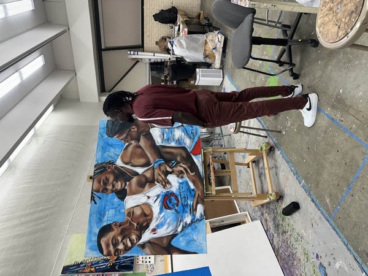
A large painting of three athletes against a blue background, shown on an easel beside Joseph in the studio.
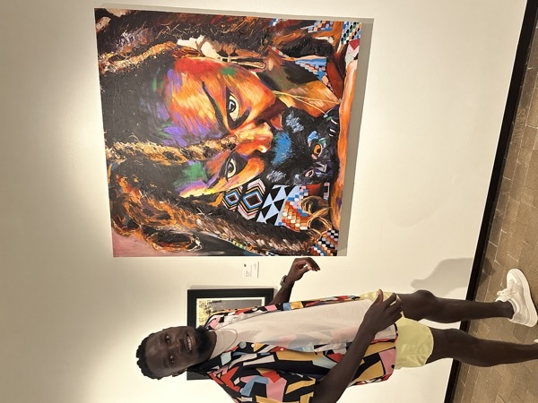
Joseph stands beside a portrait with vivid orange, yellow, and purple facial tones and patterned clothing.
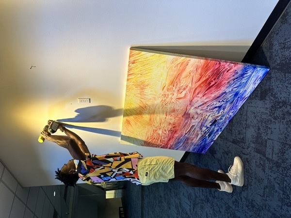
Joseph works with a drill above a leaning abstract painting filled with yellow, red, and blue marks.
Beyond the result, there is a human moment.
My paintings turn toward the overlooked moments in sports: the pause around an effort, the uncertainty beneath a composed exterior, and the vulnerability that can exist alongside strength. I am interested in what these moments reveal beyond the public image of athletic performance.
Working between realism and abstraction, I explore how a recognizable gesture can carry an emotional experience. Realism offers a connection to the body; abstraction makes room for what cannot be measured. Together, they allow vulnerability and resilience to occupy the same image.
Through painting, I invite viewers to look beyond the outcome and consider the person within the performance.
Dord Fitz Gallery
Solo BFA exhibition
Joseph Oreva’s solo BFA exhibition, presented at Dord Fitz Gallery in December 2025.
Exhibition photographs are presented below; individual artwork details will be added here.
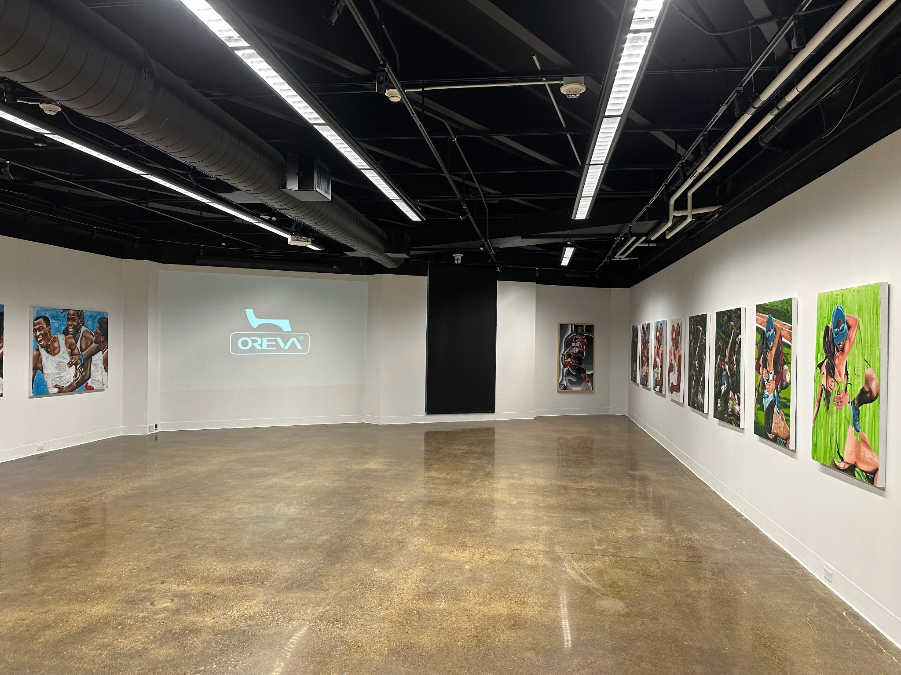
OREVA projected across the gallery wall, surrounded by paintings.
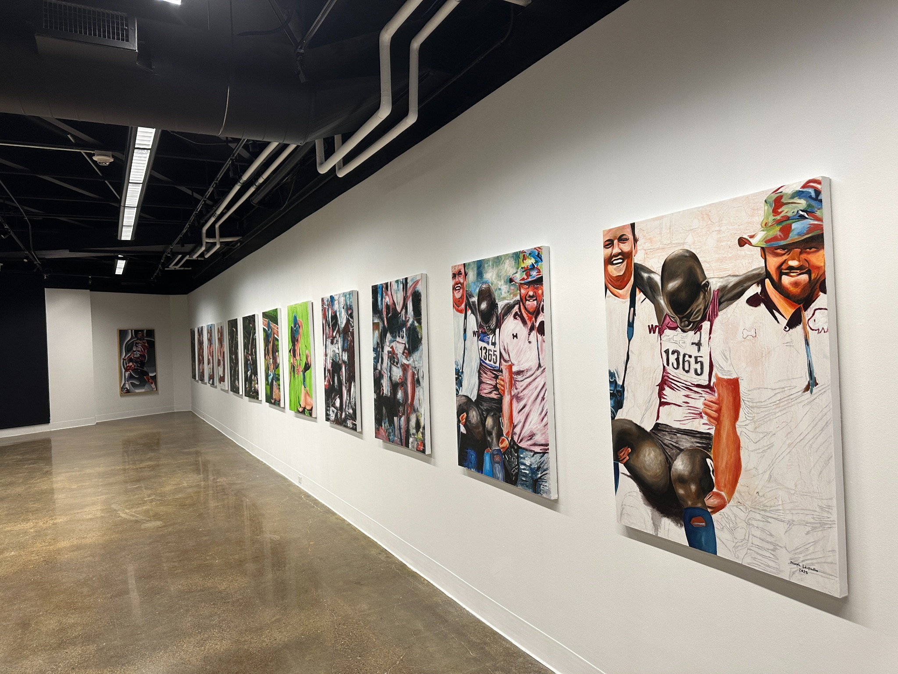
A closer view of the paintings and their installation.
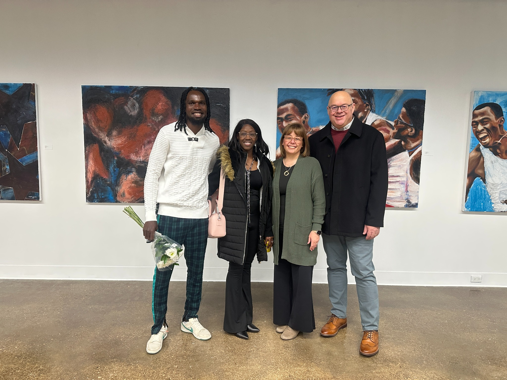
From left to right: Joseph Oreva, his wife Sherhonda Edafiadhe, Shanda Lane, and Donnie Lane.
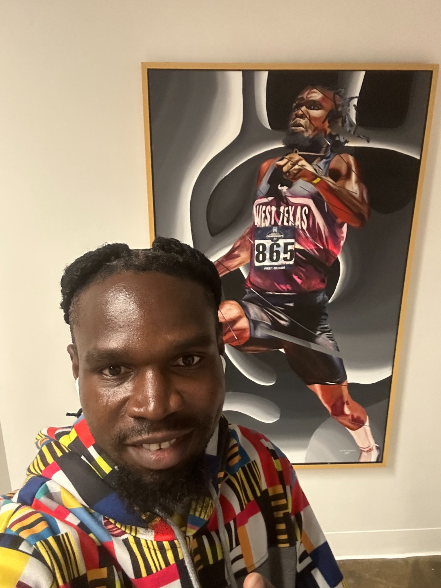
Joseph beside his framed self-portrait as a long jumper.
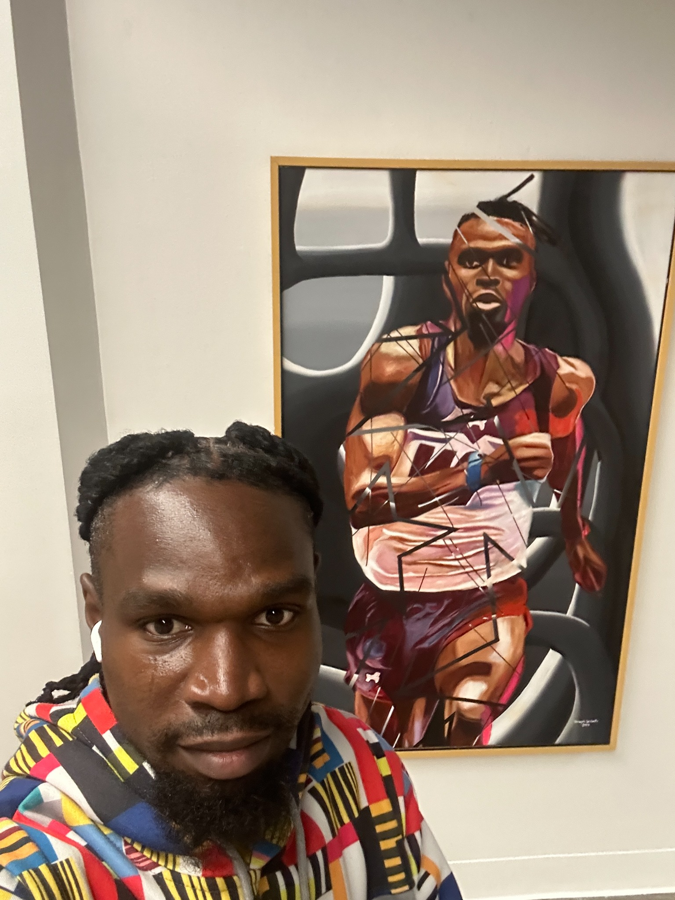
Joseph beside his framed self-portrait as a runner.
Inaugural issue · Volume 1, Number 1 · Spring 2026
The Pivot, the Paul and Virginia Engler College of Business Magazine at West Texas A&M University, features Joseph Oreva.
The magazine feature discusses his creative process, paintings, athletic background, and journey as an artist and graduate student.
Select a photograph to enlarge it. Browse with the previous and next controls or the arrow keys.
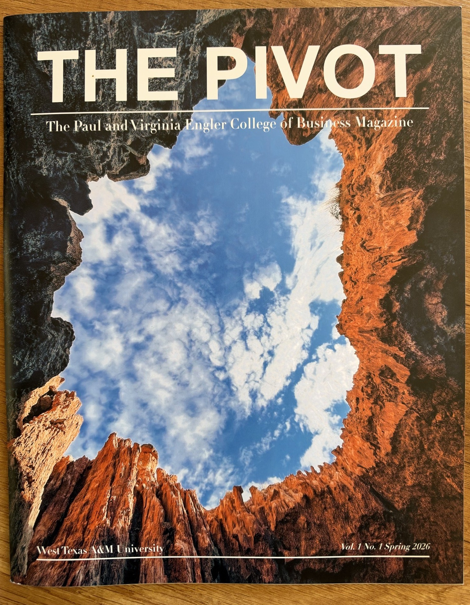
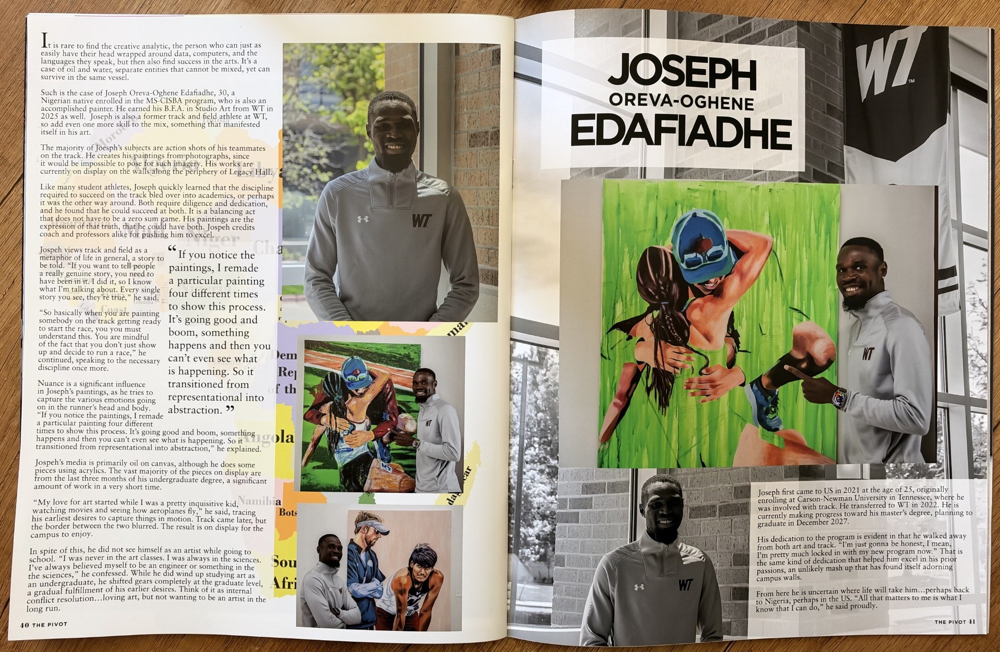
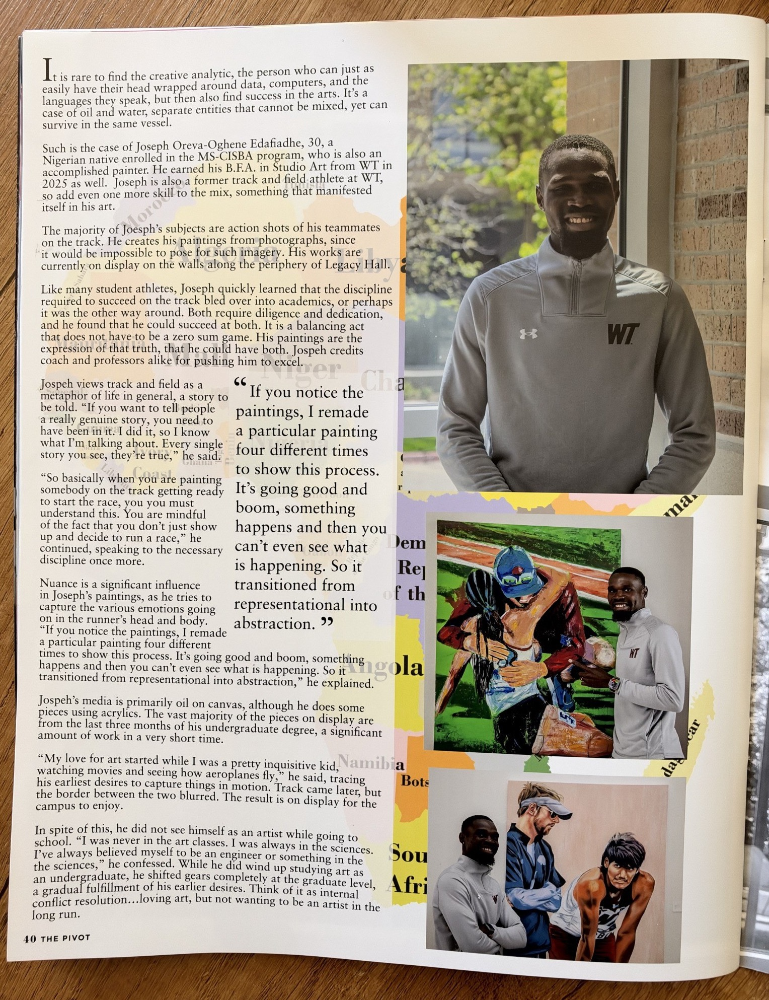
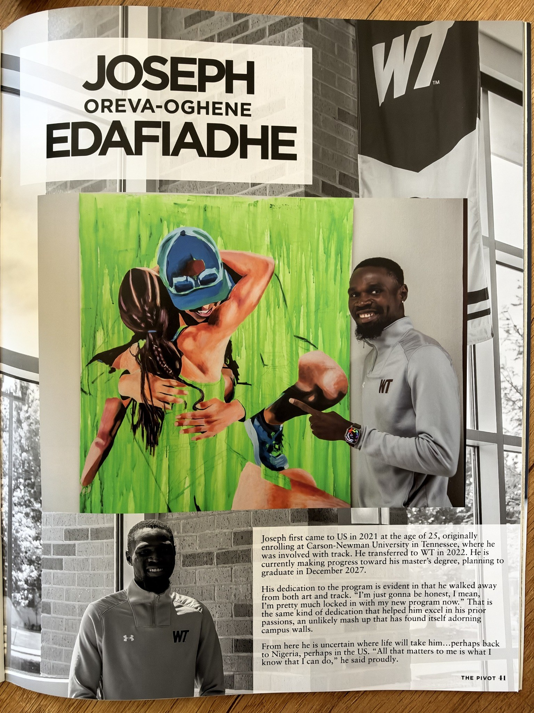